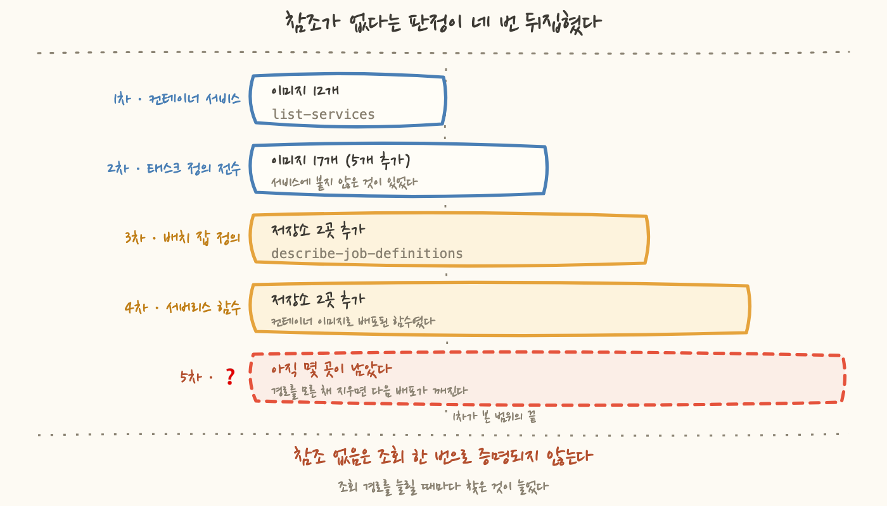
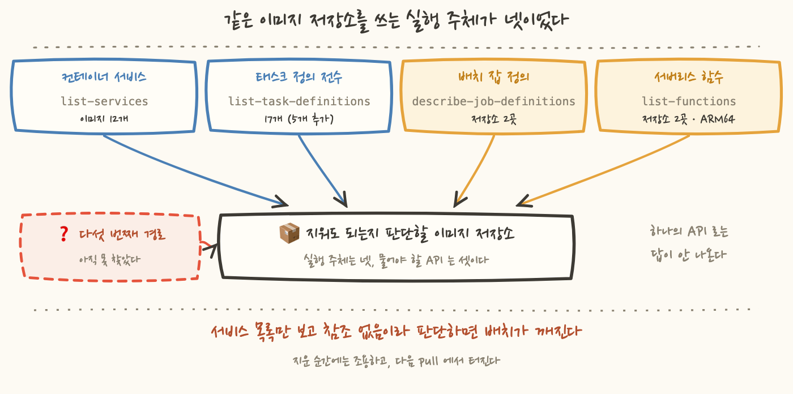

컨테이너 이미지 저장소 목록을 열어놓고 어느 것을 지울지 고르던 중이었어요. 오래된 태그가 잔뜩 쌓여 있고 용량은 계속 늘어나는 중이었으니 지울 것은 분명히 있었습니다. 그런데 고르려면 그 앞에 답해야 하는 질문이 하나 있었어요.
지금 무엇이 이 이미지를 쓰고 있나.
이 질문을 대충 답하면 조용히 지나갑니다. 지운 순간에는 아무 일도 안 일어나요. 이미 떠 있는 컨테이너는 이미지를 다시 받지 않으니까요. 문제는 다음 배포나 스케일아웃에서 나옵니다. 그때 pull 이 실패해요. 그래서 지우기 전에 참조를 전수로 찾기로 했는데, 그날 "참조가 없다"는 판정이 네 번 뒤집혔습니다. 12개가 전부인 줄 알았는데 태스크 정의를 훑으니 17개가 됐고, 배치를 찾자 또 늘었고, 서버리스를 찾자 한 번 더 늘었어요. 그러고도 네 경로 어디에도 없는 것들이 남았습니다.
이미지 저장소는 정리 대상으로 고르기 좋은 항목입니다. 용량이 눈에 보이고, 오래된 태그는 대부분 아무도 안 쓰고, 지우는 명령도 간단해요. 7편에서 정리한 삭제의 문법을 그대로 적용하면 될 것 같았습니다.
그런데 이 항목에는 다른 자원과 구별되는 성질이 하나 있어요. 잘못 지웠을 때 그 자리에서 안 터진다는 점입니다.
로드밸런서를 잘못 지우면 그 즉시 접속이 끊겨요. 데이터베이스를 잘못 지우면 즉시 오류가 쏟아집니다. 그런데 이미지를 지우면 지금 돌고 있는 것은 계속 돕니다. 이미 실행 중인 컨테이너는 이미지를 다시 내려받지 않으니까요. 저장소가 비어도 그 위에서 도는 프로세스는 아무것도 모릅니다.
깨지는 시점은 다음번에 이미지를 받아야 할 때예요. 재배포할 때, 부하가 올라 태스크를 하나 더 띄울 때, 노드가 교체되면서 컨테이너가 다시 뜰 때입니다. 그러니까 원인과 증상 사이에 며칠이 들어갑니다. 며칠 뒤에 배포가 깨지면 그날 바꾼 것부터 의심하게 되고, 저장소 정리는 이미 완료 목록에 들어가 있어요.
그래서 지우기 전에 참조를 세는 것이 유일한 방어선이에요. 첫 조회는 어렵지 않았습니다. 클러스터 목록을 받고, 클러스터마다 서비스 목록을 받고, 서비스마다 붙어 있는 태스크 정의를 읽어서 그 안의 이미지를 뽑았어요. 태스크 정의는 컨테이너를 어떻게 띄울지 적어둔 설계도이고, 서비스는 그 설계도를 골라 "몇 개를 계속 띄워두라"고 선언한 것입니다. 이미지 이름이 적혀 있는 자리는 설계도 쪽이에요.
12개가 나왔고 저는 이걸 완전한 목록으로 취급했어요. 근거는 있었습니다. 조회에 빠진 클러스터가 없고, 클러스터마다 서비스를 전부 순회했고, 스크립트도 오류 없이 끝났으니까요. 그런데 조회가 성공한 것과 조회 범위가 맞는 것은 다른 이야기입니다. 그 차이를 알려준 것은 목록에 없는 것이 아니라, 목록에 있으면 안 되는 것이었어요.
12개를 하나씩 저장소 목록과 대조하다가 이상한 것을 봤습니다. 세 개가 존재하지 않는 저장소를 가리키고 있었어요. 이미 삭제된 저장소였습니다.
그중 하나의 출처가 특히 걸렸어요. 예전에 "사용 종료"로 판단해서 정리한 서비스의 것이었습니다. 그때 저장소는 지웠는데 서비스가 남아 있었고, 그 서비스가 여전히 지워진 이미지를 가리키고 있었어요.
그러니까 그 서비스는 태스크를 띄울 수 없는 상태입니다. 지금 배포를 걸면 pull 에서 실패해요. 다행인 것은 desiredCount 가 0 이라는 점이었습니다. 띄우려는 태스크가 없으니 실패할 일도 없고, 그래서 열어보기 전까지 아무 신호도 없었어요.
여기서 남는 것은 그 서비스가 무해했다는 사실이 아닙니다. 완료로 기록한 정리가 사실은 안 끝나 있었다는 점이에요.
이게 왜 생기냐면, 정리의 완료 판정을 지운 목록으로 하기 때문이에요. 지우기로 한 것을 다 지웠으면 완료입니다. 그런데 지운 것을 가리키던 쪽은 그 목록에 없어요. 참조는 지워지는 자원 쪽에 있지 않고 가리키는 다른 자원 쪽에 있는 속성이니까요.
11편에서 도메인 둘이 열다섯 달 동안 죽은 곳을 가리키고 있었는데 아무도 신고하지 않았다고 썼는데 이건 그것과 같은 가족입니다. 방향만 반대예요. 그때는 참조가 죽은 곳을 가리키고 있었고, 이번에는 죽은 참조가 살아 있는 목록에 섞여 들어왔습니다. 둘 다 청구서에 안 보이고 알람에도 안 잡혀요.
desiredCount 가 0 이라 지금은 조용하지만 누군가 그 숫자를 올리는 순간 실패합니다그리고 이 발견이 조회 자체에 대해서도 한 가지를 말해줬어요. 제 조회가 실제로 존재하는 것을 세고 있지 않다는 겁니다. 나온 12개 중 셋은 실재하지 않는 대상을 가리키고 있었으니까요. 조회가 세고 있던 것은 "지금 쓰이는 이미지"가 아니라 "어딘가에 적혀 있는 이미지 문자열"이었어요. 그 둘이 다르다는 것을 알고 나니, 반대쪽도 의심하게 됐습니다. 적혀 있는데 제 조회가 안 읽는 자리가 있지 않을까.
가장 먼저 떠오른 빈 자리는 태스크 정의였어요. 서비스를 통해서 태스크 정의를 읽었으니, 그 조회는 서비스에 붙어 있는 태스크 정의만 봅니다. 그런데 태스크 정의는 서비스와 독립적으로 등록돼요. 일회성 실행에 쓰거나, 스케줄로 돌리거나, 사람이 필요할 때 직접 띄우는 것들이 있습니다.
그래서 2차 조회는 태스크 정의 쪽에서 시작했습니다. 태스크 정의는 이름이 같은 것끼리 패밀리로 묶이고 그 안에 리비전이 번호로 쌓여요. 패밀리 목록을 받고 패밀리마다 최신 리비전을 읽어서 이미지를 뽑았습니다.
다섯 개가 더 나왔어요. 서비스 기준 조회가 놓친 것들입니다. 여기서 알게 된 것은 1차 조회에 실수가 없었다는 점이었어요. 그 조회는 자기가 볼 수 있는 것을 정확히 다 봤습니다. 다만 서비스라는 개념 자체가 "계속 떠 있는 것"만 표현합니다. 가끔 뜨는 것은 서비스로 선언되지 않으니 그 목록에 있을 수가 없어요.
이 시점에서 저는 17개가 최종이라고 생각했습니다. 서비스로도 봤고 태스크 정의로도 봤으니 컨테이너 쪽은 다 본 것 같았어요. 그런데 목록을 저장소 목록과 나란히 놓으니 여전히 설명되지 않는 줄이 남았습니다.
용량이 큰 저장소 몇 곳이 두 목록 어디에도 없었어요. 용량만으로도 이상했는데 그중 하나는 더 이상했습니다. 어제 새 이미지가 푸시돼 있었어요.
푸시가 있다는 것은 빌드 파이프라인이 돌고 있다는 뜻입니다. 누군가 코드를 고쳤고, 빌드가 돌았고, 이미지가 올라갔어요. 살아 있는 파이프라인입니다. 그런데 그 이미지를 쓰는 곳이 제 조회에는 안 보였어요.
여기서 판단의 기준이 바뀝니다. 그전까지 저는 조회 결과의 빈칸을 "참조 없음"으로 읽고 있었어요. 그런데 최근 푸시는 그 빈칸보다 강한 증거입니다. 아무도 안 쓰는 저장소에 어제 새 이미지가 올라올 이유가 없으니까요. 둘이 충돌하면 의심해야 하는 쪽은 조회입니다. 빈칸은 "없다"가 아니라 "내 조회가 거기까지 안 간다"일 수 있어요.

단서는 이미 조회 결과 안에 있었어요. 1차 조회에서 받아둔 클러스터 목록입니다. 그때는 클러스터를 순회하기 위한 중간 재료로만 썼고 이름은 안 읽었는데, 다시 열어보니 둘의 이름에 AWSBatch- 접두사가 붙어 있었습니다.
배치 서비스가 컨테이너 클러스터를 빌려 쓰기 때문이에요. 잡을 실행할 때 컨테이너를 띄우고 그 컨테이너가 뜨는 자리가 클러스터입니다. 그러니 클러스터 목록에는 나옵니다.
그런데 배치는 서비스를 만들지 않고, 이미지가 적혀 있는 자리도 잡 정의라는 별도 개념입니다. 잡을 낼 때 그 잡 정의로 컨테이너를 띄워요. 그래서 list-services 로는 안 잡히고, 제 태스크 정의 조회에도 이 이미지는 안 걸렸습니다. 배치가 뒤에서 컨테이너 쪽 태스크 정의를 등록하기는 하는데 어느 쪽이든 참조의 원본은 잡 정의예요. 두 조회 다 정상 동작이고, 그 클러스터는 서비스가 0개인 빈 클러스터로 보였습니다.
그러니까 이건 조회가 실패한 게 아니라 다른 서비스에 있는 개념을 컨테이너 쪽 API 에 물어본 것입니다. 답이 없는 게 당연했어요.
그래서 3차 조회는 배치 잡 정의 쪽이었습니다. 조회하니 찾던 저장소가 나왔어요. 다만 첫 조회는 빈 답을 줬습니다.
이 실패의 성질을 짚어둘게요. 조회는 성공했고 오류도 없었습니다. 필드 경로를 고정해서 읽었는데 그 경로에 값이 없었을 뿐이에요. 그러면 결과는 빈 값이고, 빈 값은 화면에서 "참조 없음"과 똑같이 생겼습니다.
3편에서 그럴듯한 숫자가 가장 위험하다고 썼는데, 여기서는 그럴듯한 빈칸이 그 자리에 있었어요. 오류가 났으면 저는 바로 알았을 겁니다. 조용히 비어 있었기 때문에 하마터면 그대로 "이 잡 정의에는 이미지가 없다"고 적을 뻔했어요. 스키마가 여러 벌인 API 에서 경로를 하나만 아는 것은, 모르는 것보다 위험합니다. 모르면 찾아보지만 안다고 생각하면 결과를 그냥 믿으니까요.
jq -r '.. | .image? // empty' 는 중첩 위치를 몰라도 답을 줍니다
그리고 나온 참조에 또 하나 특이한 점이 있었어요. 태그가 없었습니다. {저장소}/prod 로 끝나고 그 뒤에 태그가 안 붙어 있었어요.
컨테이너 런타임은 태그가 생략되면 latest 로 해석합니다. 그러니 이 저장소에서 지키면 되는 것은 latest 하나예요. 나머지 태그는 이 참조 기준으로는 지워도 됩니다. 참조를 찾아낸 결과가 "이 저장소는 손대지 마세요"가 아니라 "이 저장소에서 지켜야 할 것은 한 줄이다"로 좁혀진 셈이에요. 참조를 정확히 아는 것의 값이 여기 있습니다. 모르면 저장소 통째로 손을 못 대니까요. 다만 13편에서 본 대로 latest 가 항상 최신 자리에 있는 것은 아니어서, 개수로 자르는 규칙은 이 한 줄을 그냥 쓸어갑니다. 지킬 것이 한 줄이라고 안전해지지는 않아요. 그 한 줄을 따로 지켜야 한다는 뜻입니다.
배치를 찾고 나니 남은 질문이 하나 더 있었어요. 조사 초반에 저장소별로 이미지 아키텍처를 훑은 적이 있는데, 그때 거의 전부 x86 이었고 딱 두 곳만 ARM64 였습니다.
그때는 이걸 그냥 기록만 해뒀어요. 설명이 안 됐거든요. 컨테이너를 띄우는 노드가 전부 x86 인데 ARM64 이미지를 빌드해 올릴 이유가 없습니다. 그런 이미지는 뜨질 않아요. 잘못 빌드한 것이거나, 실험하다 만 것이거나, 아무튼 이상한 것으로 분류하고 넘어갔습니다.
4차 조회는 서버리스 함수였어요. 컨테이너 이미지로 배포된 함수가 있는지 확인했더니 둘이 나왔고 그것이 정확히 그 두 저장소였습니다.
정리하면 컨테이너 오케스트레이터가 아니라 서버리스 함수의 이미지였어요. 서버리스 쪽은 ARM64 를 지원하고 x86 보다 저렴하니까 그렇게 빌드하는 게 맞습니다. 이상해 보였을 뿐 제대로 한 것이었어요.
여기서 제가 틀린 지점이 어디인지 적어둘게요. 데이터는 이미 제 손에 있었습니다. "왜 이것만 ARM64 인가"라는 질문을 던지지 않은 것이 전부예요. 설명이 안 되는 값을 보고 "이상하다"로 분류하고 넘어갔는데, 그 값은 이상한 게 아니라 제가 모르는 실행 주체가 있다는 신호였습니다.
6편에서 이름이 다섯 번 거짓말했다고 썼는데 이번 건은 결이 조금 달라요. 데이터는 거짓말하지 않았어요. 제가 안 물어본 겁니다. 설명이 안 되는 값을 발견 목록에 적어두고 넘어가는 것과, 그 값을 질문으로 바꾸는 것 사이에는 차이가 있어요. 앞쪽은 기록이고 뒤쪽은 조사입니다.
네 번의 조회 결과를 한 장에 놓으면 이렇게 됩니다.
마지막 줄이 이 글에서 제일 중요합니다. 용량이 큰 저장소 몇 곳이 네 경로 어디에도 없었어요.
가능성은 몇 가지 떠오릅니다. 인스턴스에서 직접 컨테이너를 띄우고 있을 수도 있고, 별도의 배포 도구가 이미지를 가져가고 있을 수도 있어요. 어느 쪽이든 제가 아는 조회로는 안 보입니다.
그래서 손대지 않고 남겼습니다. 용량 기준으로는 정리 효과가 큰 것들이라 아쉬웠는데, 참조 경로를 모른 채로 지우면 1장에서 적은 그대로 됩니다. 지운 날에는 조용하고 며칠 뒤 배포에서 깨져요.
8편에서 그날 확보한 절감액이 0이었다고 썼는데 이 항목도 같은 자리에 놓입니다. 정리를 못 한 것이 아니라 정리 여부를 판단할 근거를 못 만든 것이에요. 그리고 이 구분은 다음 사람에게 다르게 읽힙니다. "안 했음"으로 적으면 다시 처음부터 판단해야 하지만, "네 경로로 찾았고 거기 없었다"고 적으면 다음 사람은 다섯 번째 경로부터 시작합니다.

이 작업에서 남는 규칙을 적어볼게요. "무엇이 이것을 쓰는가"는 하나의 API 로 답이 안 나옵니다. 같은 컨테이너 이미지를 쓰는 실행 주체가 넷이었고, 그 넷은 서로 다른 서비스 셋에 흩어져 있었어요. 컨테이너 오케스트레이터가 둘을 갖고 있었고 배치와 서버리스가 하나씩이었습니다. 저장소는 하나인데 그것을 참조하는 자리는 흩어져 있습니다.
그리고 이 조사에는 방향의 비대칭이 있어요. "참조가 있다"는 한 건만 찾으면 증명됩니다. 반면 "참조가 없다"는 전수를 증명해야 해요. 그런데 전수의 범위를 제가 정하는 순간, 그건 증명이 아니라 가정이 됩니다. 1차 조회의 12개가 딱 그랬어요. 그 숫자는 틀리지 않았고 다만 제가 정한 범위 안에서만 참이었습니다.
2차도 같은 자리에 있어요. 저는 그걸 "태스크 정의 전수"라고 불렀는데, 실제로는 패밀리마다 최신 리비전 하나씩만 읽었습니다. 이전 리비전에 적힌 이미지는 여전히 안 봤어요. 서비스가 붙은 쪽은 1차가 리비전을 콕 집어 읽었으니 메워지지만, 구버전 리비전을 지정해 직접 띄우는 경우는 이 조회로도 안 보입니다. 7편에서 시작 템플릿은 최신 버전만 보면 안 되고 모든 버전을 봐야 한다고 적어놓고 리비전 쪽에서 같은 것을 반복한 셈이에요.
그래서 조사 순서를 뒤집는 게 낫습니다. 저장소에서 시작해 참조를 찾으면 제가 아는 경로만 보게 돼요. 대신 실행 주체를 먼저 열거하고 각 주체에게 "너는 어떤 이미지를 쓰냐"고 묻는 편이 낫습니다. 그러면 최소한 내가 아는 주체의 수가 몇 개인지가 눈에 보이고 그 목록이 짧다는 사실 자체가 경고가 돼요. 이번에 제가 컨테이너 서비스 하나로 시작한 것은 그 목록을 한 칸짜리로 잡아둔 것과 같았습니다.
desiredCount 가 0 이라 무해했지만 완료로 기록한 정리가 사실은 안 끝나 있었다. 이 셋은 이번 범위가 아니어서 발견 목록에 적는 데서 멈췄다. 삭제의 완료 조건을 지운 목록으로만 판정하면 가리키는 쪽이 그대로 남는다.AWSBatch- 접두사가 붙은 것이 둘이었고, 배치는 서비스를 만들지 않고 이미지도 잡 정의에 적혀 있어서, 서비스 목록으로도 내 태스크 정의 조회로도 잡히지 않았다. 첫 조회는 containerProperties.image 가 전부 None 이었는데, 잡 정의가 신형 ecsProperties 구조를 써서 이미지가 taskProperties 와 containers 를 지나 두 겹 안쪽에 있었기 때문이다. jq -r '.. | .image? // empty' 로 중첩 어디에 있든 훑어서 찾았다. 오류 없이 빈 값이 돌아왔다는 점이 위험했다. 빈 값은 화면에서 참조 없음과 똑같이 생겼다. 그리고 그 참조에는 태그가 없어서 latest 로 해석되므로, 그 저장소에서 지킬 것은 한 줄이었다.